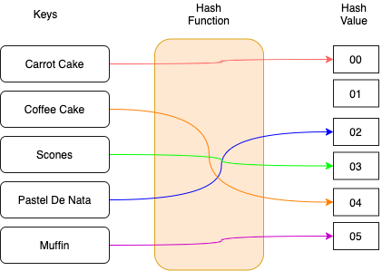
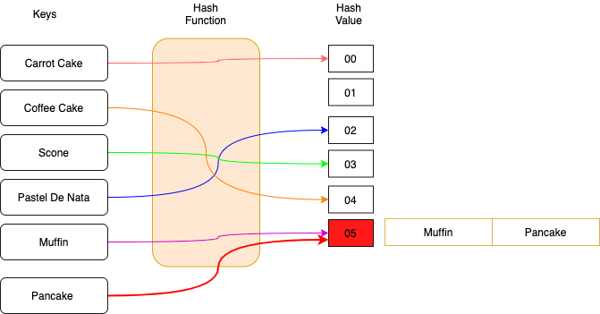
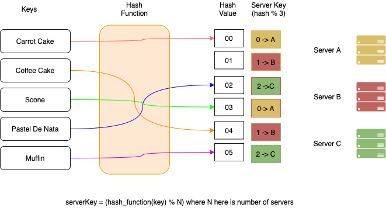
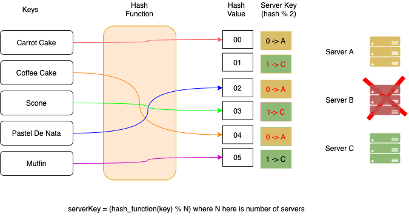
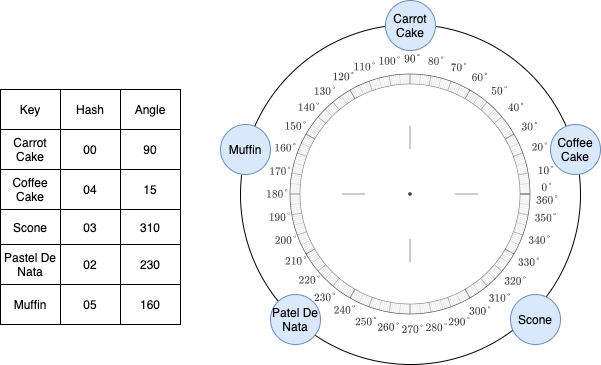
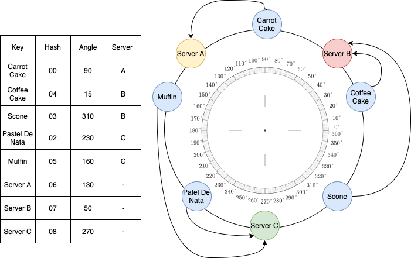
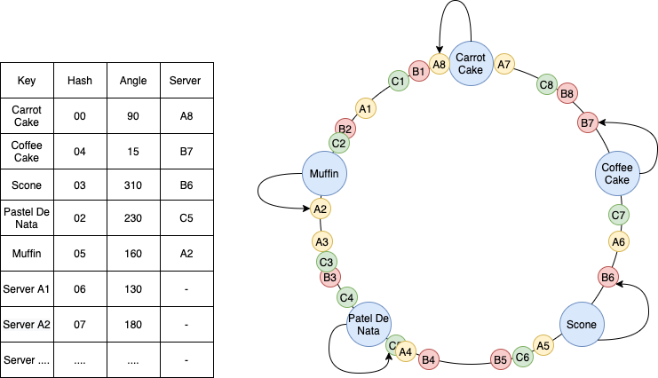
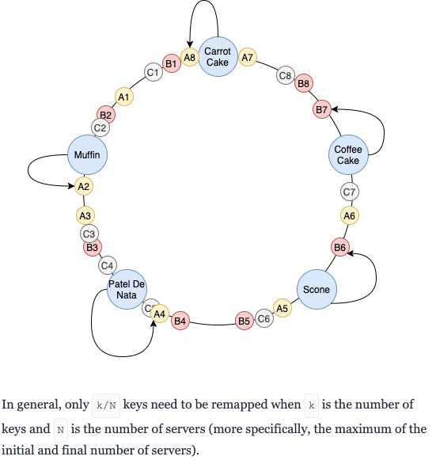

Hashing together a cache
## What is Hashing Etymology: (maybe) The term "hash" offers a natural analogy with its non-technical meaning (to "chop" or "make a mess" out of something). or more concretely: A hash function is any function that can be used to map data of arbitrary size to fixed-size values. --- ## Hash Tables  Hash values are usually used to index a fixed-size table called a hash table. Where you can then go and find some data. <!-- <iframe frameborder="0" width="100%" height="500px" src="https://replit.com/@rankers/hashing?embed=true"></iframe> --> --- ## Properties of a good hashing function 1. It should be very efficient to compute. 2. The function needs to be determinist; you get the same output for the same input each time it is run. 3. It should avoid collisions, no two inputs should produce the same output. If collision -> Bucketing. 4. For encryption purposes, the output should not give any indication of the input --- ## Clashing and Performance  Hashh Tabble: Best ois O(1) Array Search: O(N) --- ## Examples * Modulo * MD5 (Message Digest) * SHA (Secure Hashing Algorithm), SHA1, SHA2, SHA3, SHA-256 * BLAKE2s * RIPEMD-160 --- Applications * Document integrity * Generate unique (almost) IDs * Git - Every time you commit something you get a lovely big hash value * Pseudorandom number generation * Proof of work algorithm * NFTs / Crypto Currency's  --- ## Cryptographic hashing vs just normal hashing A cryptographic hash function aims to guarantee a number of security properties. 1. Most importantly that it's hard to find collisions 2. Output appears random --- ## Caching <q>There are only two hard things in Computer Science: cache invalidation and naming things.</q> -- Phil Karlton <q>Premature optimization is the root of all evil</q> -- Donald Knuth --- ## What is a cache A cache is any data store that can store and retrieve data quickly for future use, enabling faster response times and decreasing load on other parts of your system. --- ## Why and how we cache Performance Caches can work in multiple ways: 1. Store data closer to where it is likely to be needed 2. Reduce repeated calculations / queries / requests to other services Usually want to measure cache 'hit-rate' --- ## Examples --- ## Examples * DNS - TTL * Browser - Etags * Harddrives - Disk Buffer or Cahce Buffer * File system cache / CDNs - Cloudflare, Cloudfront * In-memory application cache - Spring-context, EHCache, just use a map of key / values * Database cache - integrated to db engine, built-in write-through capabilitie * Distributed cache - Memcache / Redis --- ## Side track on memoization Do fibonacci memoization https://codeburst.io/understanding-memoization-in-3-minutes-2e58daf33a19 --- ## Caching strategies 1. First in First out(FIFO) 2. Least recently used (LRU) 3. Least frequently used (LFU) --- ## Cache consistency - write through vs write back 1. A write-through cache updates the cache and main memory simultaneously, 2. In a write-behind cache, memory updates occur asynchronously. --- ## Consistent Hashing 1. It may be necessary or desirable to split a hash table into several parts, hosted by different servers. 2. The objects (and their keys) are distributed among several servers, hence the name. 3. Many popular products use this technique: Dynamo DB, Memcache, Redis --- ## How --- ## How  --- ## Rehashing problem What happens when the number of server changes? With app servers with no state they can quite happily scale up / down. With specific data stored on specific machines we need to know the machine the data is in. --- ## Back to our example  Only 2 key are the same! Even keys on servers A and C have moved. --- ## Solution We need a distribution scheme which doesn't rely on the number of servers, means key redistribution is minimized. --- ## Hash ring Introducing the hash ring, this is an abstract circle which you map your keys and servers to.  --- ## Hash Ring 2 Now assign your servers to the same ring  --- ## Hash Ring 3 Assign many labels per server to even out distribution  --- ## Loose a server?  --- ## Fin 1. Recommendation to listen to this: https://podcasts.apple.com/gb/podcast/episode-65-oh-my-gosh-we-missed-caching-what-a-cache-miss/id467641329?i=1000389586564 2. Read this for more on Memcached at facebook: https://www.usenix.org/system/files/conference/nsdi13/nsdi13-final170_update.pdf